Home window
This is the first window after logging in. There are module selection buttons, emergency buttons and quick action buttons.
If you don't see any of the buttons, you probably don't have access rights to the corresponding function or module
** Fig.1 ** 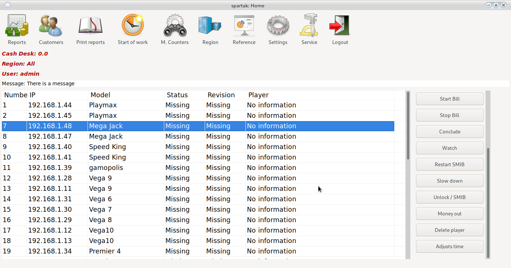
Modules
Reports
Cash flow reporting and management module. For more information, see Reports
Clients
Client card management module. For more information, see Customers
M.Counters
Checking and repairing the mechanical counters of the machines. A window opens:
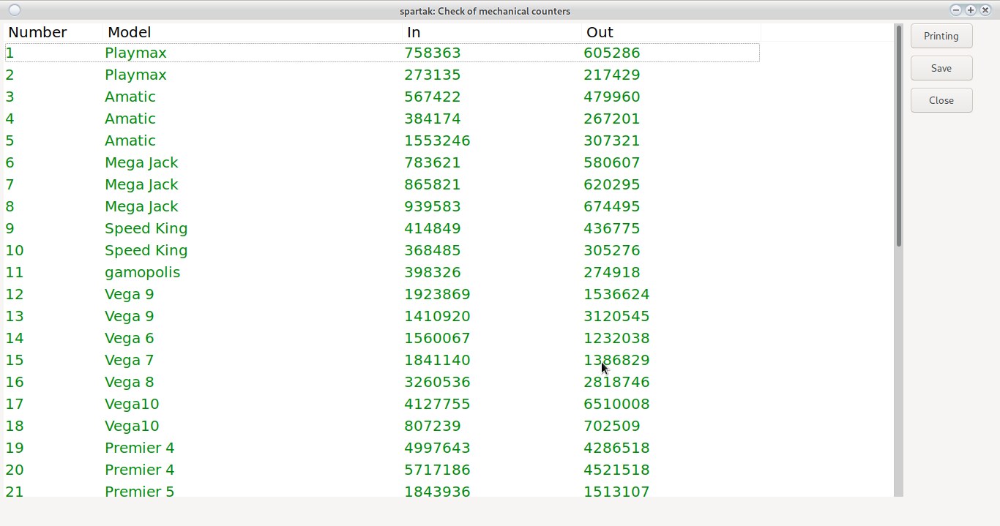
From the print button, a sheet with the current counters and a field for making changes is displayed.
If there are changes in the double-click counters on the respective machine, it opens
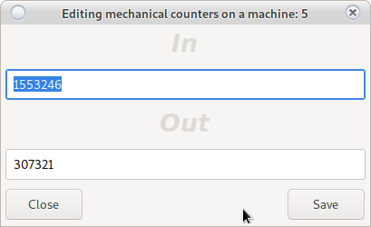
Mechanical counters are repaired and recorded. The system will return to repair mechanical counters. The machines that have been repaired are marked in red.
The changes will not take effect until the Save button is clicked in the main window.
Recommended check of mechanical counters is every month.
Depending on the coefficient, it is possible to give a difference of 2 to 50 BGN.
Region
Select the region in which the user works. Opens a dawn to change the region.
Only machines running in the selected region are displayed in the main window.

 adds a new region
adds a new region
Print reports
Printing a report for DKH Opens a report window.
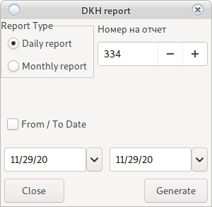
Select report type:
-
Daily report
It takes the previous daily date as the starting date and the current date as the end date.
The daily report number can be changed if you have rights.
Collects all the information and prints it.
-
Monthly report
In case you don't see From / To date. Contact the owner to add rights
If From / To date is not selected, it assumes the previous daily start date, and the current current end date.
When selecting From / To date will use the set values
The monthly report number can be changed if you have rights.
Collects all the information and prints it.
Start of shift
A croupier change starts and a region selection window opens.
From there, the user selects the region in which he works.
Only machines running in the selected region are displayed in the main window.
A new region can be added from the button.
The system always remembers the last selected region. Due to frequent errors, the system will not allow a report if no shift started.
Warning!
The system will not allow a report if there is no start of changeIn the wrong region, look at
Region
Reference
Help module. For more information, see References
Settings
Settings module. For more information, see Settings
Service
Settings module. For more information, see Service
Exit
Will end the user session and return the system to Login
Quick action
The buttons to the right of the main window
SMIB check
It will check if all SMIB controls are working and have a connection to a central server.
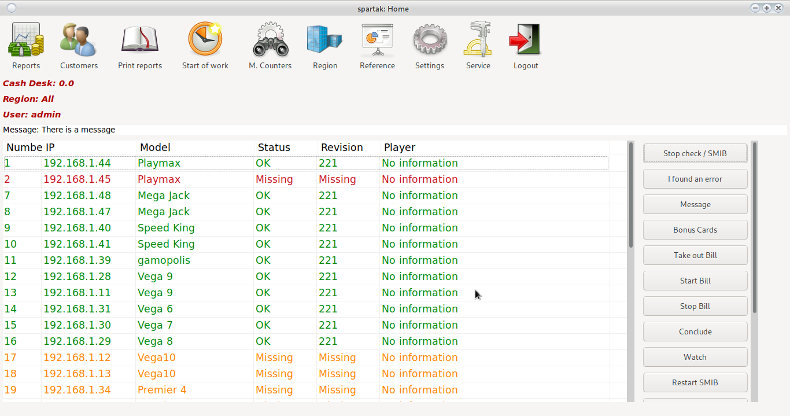
In case it is delayed on a certain non-working controller, all after it will be colored in
Red
Just wait for the process to continue.
The tested SMIB controllers are by color as follows:
Not checked
The controller is running
No connection to controller
The controller is running and there is a player on the machine
The controller has an unknown revision (Update)
The controller has an unknown revision (Update)
I found a software error
Collects all the necessary logs from the selected machine and sends them to the programmers.
It helps to make the program better. Does not collect counters or personal information, only information about the errors generated in the code.
Messages
Allows writing messages between users of the system. Opens a message dialog
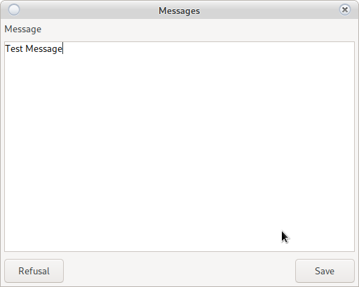
After entering a message, it can be read even by any user with a double click on inscription
Message: There is a message
Attention!
Unauthorized users are unable to write or edit messages
Bonus Cards
This is a reference to the moment of all fallen customer bonuses, bonus cards and all those who need it be hit if the feature is enabled for customers and/or bonus cards
Attention!
In case you want the withheld bonuses to be credited to the croupier's cash register
lookSettings/System/System
Take out Bill
Quick removal of the ridge from the machines. Used in case the croupier needs to find quickly money in the middle of the shift.
Detects the current state of the ridge and displays the amount in the cartridge. By double-clicking it is determined from which machines it will be taken out as the numbering of the machine will be colored in
Green
The machine's bill will stop taking money until it is clicked again the machine does not turn red
Red
or the Remove button is not pressed.If the bill does not block, see Settings/System/System Here
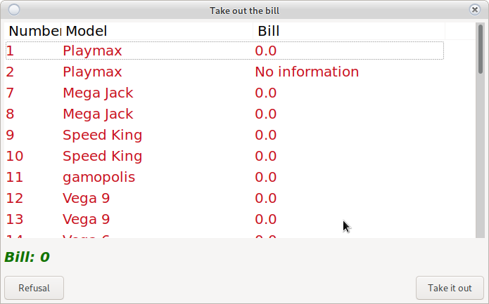
After pressing the Down button, the collected amount will be credited to the croupier's box office, and the bills will continue their normal operation.
Attention!
The system will make a zero entry in the report reports. There will be no input and output in the record, but there will be. This entry will not prevent you from continuing to work, it is simply informative.
Play the bill
In case it was not started due to a technical problem after Report or was stopped it would start of the machine in operating mode.
Stop bill
She stopped at the machine of the machine.
The bills will go out and they will stop taking money. It can be used in case the croupier remains no money. This will force customers to pay in cash and not put the money in the bill.
Use Play Bill to restart the bill
Reservation
It will currently lock the machine under SAS. When pressed again, it will unlock.
Attention!
Button is under development. The full functionality will appear in one of the next revisions. The logic is for the machine to be reserved for customer X to Date and time. In case the customer for whom the machine is reserved puts a card in it, it will be unlocked automatically. Tdug client will not be able to build on the specified machine until Date and time.
Watch
Real-time machine monitoring system.
From Start window select a machine
In case you want to select more than one machine use ctrl + Click on the machine
In case you want to select all machines use shift + click on first machine + click on last machine
A monitoring setup window will open
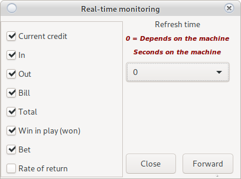
On the left you select the parameters you want to monitor, and on the right you slow down the monitoring cycle by X seconds.
Attention!
- The more machines you select, the slower the cycle will be and it is possible to skip one or two beta
- If you select only one machine, the refresh rate will be so fast that it will be difficult to monitor.
- Adjust the refresh time from the settings window.
- One spin of the reels takes 1 second.
- If you select a machine with a technical problem, it will cause a big delay in all machines.
- Do not select a damaged machine or a machine with a damaged SMIB controller.
Then with the Noview button a window will open:
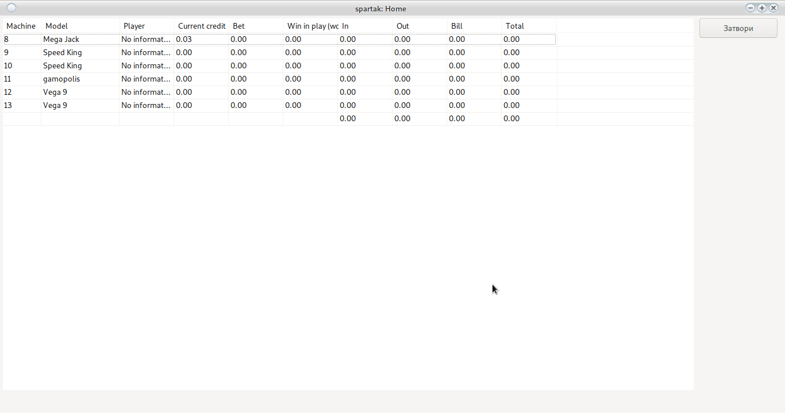
From the Close button you return to Home window
Restart SMIB
Restarts the SMIB controller. In the vast majority of cases, only a software restart is required. Hardware restart is required mainly when adding new items to the screen of the card module or in case the SMIB controller is also a preview and there are new elements added to it.
In case you want to select more than one machine use ctrl + Click on the machine
In case you want to select all machines use shift + click on first machine + click on last machine
Hardware restart in the fastest case starts after one minute, this will cause the display to turn off and reload the SMIB controller.
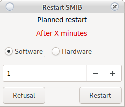
Attention!
- The software restart is immediate and takes about 10 seconds. Does not turn off the controller
- The hardware restart takes at least 1 minute to start and about a minute to fully boot the system.
- The card reader should not have a card inserted (it will cause the controller to block)
- Hardware restart can be scheduled over time in restart setup (600 means after 10 minutes)
Slow down the reels
Delays the stock rotation stock by X Milliseconds It will open a setup window
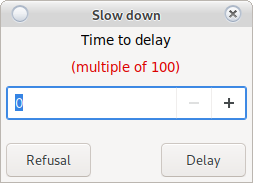
Attention!
- Delay time must be a multiple of 100 (100, 200, 300, 1500)
- For EGT machines the autoplay button will start working as a start
Unlock/SMIB
The system has a built-in security system for legacies bonus look Here
In case you want to select more than one machine use ctrl + Click on the machine
In case you want to select all machines use shift + click on first machine + click on last machine
In case of placing legacy bonus did not go through the encryption of the SMIB controller, the machine will be locked.
Attention!
Check for foreign devices before unlocking the machine.
Take out the money
Emergency button. In the case of a bet scrolling is not possible out of the money. If a croupier makes a mistake, this button will take the money out of the machine without consequences for its operation.
Attention!
Requires AFT, see Settings/System/SMIB
Delete player
Emergency button.
If due to a technical problem the customer's card remains attached to the controller, then this card cannot be used on another machine.
The card pasting function is for synchronization between all controllers.
Until the client and all the information is saved by one controller on a central server, another the controller is unable to load the same card.
Attention!
There may be a technical problem in the machine that does not allow recording (broken SAS cable, damaged switch or damaged RG45) This button will release all clients manually.
Check the time
Checks the date and time of the machine with the set value.
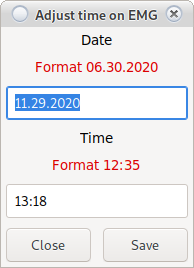
Attention!
Observe the specified format
For repair
Double-clicking on the machine signals a problem in the machine (burned monitor, not working button, etc.)

The machine number is selected automatically.
Describe the problem and press the Save button
If it is configured the signal is automatically forwarded to the service e-mail and is recorded in the information system.
Change user password
Press ctrl + p will open a window to change the user's password
Help
Press F1 or fn + F1 to open the documentation